Contents
- ME 422 Lab 1
- Exercise 1
- Exercise 2
- Exercise 2 Questions
- Exercise 3
- Exercise 3 Questions
- Exercise 4
- Exercise 4 Questions
- Exercise 5
- Exercise 5 Questions
- Exercise 6
- Exercise 6A
- Exercise 6A Questions
- Exercise 6B
- Exercise 6B Questions
- Exercise 6C
- Exercise 6C Questions
- Exercise 6D
- Exercise 6D Questions
- Exercise 6E
- Exercise 6E Questions
- Exercise 6F
- Exercise 6F Questions
- Exercise 7
- Exercise 7 Questions
- Exercise 8
- Exercise 8 Questions
ME 422 Lab 1
Rahul Goyal
Jake Rogers
% Reset clc; clear all; close all;
Exercise 1
Mass-damper system with a force input. FBD and MAD from Figure 1.1 and equations derived from the diagrams. The state variable is v, the velocity of the mass; mass m and friction coefficient b are constants, and force f(t) is the system input. The input force changes from zero at time t < 1 sec to a constant nonzero value (choose 1.0 N for simplicity) at all times t > 1 sec.
figure; sim('Lab1_1'); % Derivative of X subplot(2, 1, 1); % 2 rows, one column, first graph plot(tout, simout(:,1), 'LineWidth', 2); grid on; title('Derivative of X'); xlabel('Time [sec]'); ylabel('Value [units/sec]'); axis([0 2 -0.2 1.2]); % Value of X subplot(2, 1, 2); % 2 rows, one column, second graph plot(tout, simout(:,2), '--','LineWidth', 2); grid on; title('Value of X'); xlabel('Time [sec]'); ylabel('Value [units]'); axis([0 2 -1 5]);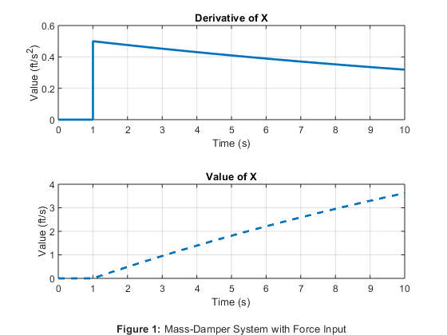
Exercise 2
First-order systems with varying settling times and steady-state gains.
figure; % Time Constant: 1s | Gain: 0.5 sim('Lab1_2A'); subplot(3, 1, 1); % 3 rows, one column, first graph plot(tout, simout, 'LineWidth', 2); title('Time Constant: 1s | Gain: 0.5'); xlabel('Time (s)'); ylabel('Response (units)'); xlim([0, 6]); % Time Constant: 0.2s | Gain: 8 sim('Lab1_2B'); subplot(3, 1, 2); % 3 rows, one column, second graph plot(tout, simout, 'LineWidth', 2); title('Time Constant: 0.2s | Gain: 8'); xlabel('Time (s)'); ylabel('Response (units)'); xlim([0, 3]); % Time Constant: 14.5s | Gain: -0.7 sim('Lab1_2C'); subplot(3, 1, 3); % 3 rows, one column, third graph plot(tout, simout, 'LineWidth', 2); title('Time Constant: 14.5s | Gain: -0.7'); xlabel('Time (s)'); ylabel('Response (units)'); xlim([0, 60]);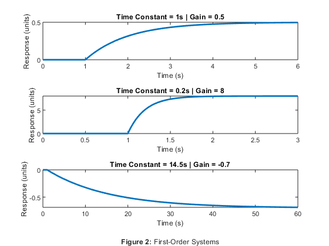
Exercise 2 Questions
The system behaves as expected: it approaches a final output change of 0.5 and takes one second to reach about 63.2% of this final output change.
To produce a steady-state response twice as great in the same time frame, the steady-state gain can be multiplied by 2.
To accelerate the system such that it responds twice as quickly as the original system, the time constant can be divided by 2.
Exercise 3
Second-order systems with varying steady-state gains, damping ratios, and natural frequencies.
figure; % Damping Ratio: 0.15 | Frequency: 1.0 Hz sim('Lab1_3A'); subplot(3, 1, 1); % 3 rows, one column, first graph plot(tout, simout, 'LineWidth', 2); title('Damping Ratio: 0.15 | Frequency: 1.0 Hz'); xlabel('Time(s)'); ylabel('Response (units)'); xlim([0, 7]); % Damping Ratio: 0.30 | Frequency: 1.0 Hz sim('Lab1_3B'); subplot(3, 1, 2); % 3 rows, one column, second graph plot(tout, simout, 'LineWidth', 2); title('Damping Ratio: 0.30 | Frequency: 1.0 Hz'); xlabel('Time(s)'); ylabel('Response (units)'); xlim([0, 4]); % Damping Ratio: 0.15 | Frequency: 2.0 Hz sim('Lab1_3C'); subplot(3, 1, 3); % 3 rows, one column, third graph plot(tout, simout, 'LineWidth', 2); title('Damping Ratio: 0.15 | Frequency: 2.0 Hz'); xlabel('Time(s)'); ylabel('Response (units)'); xlim([0, 4]);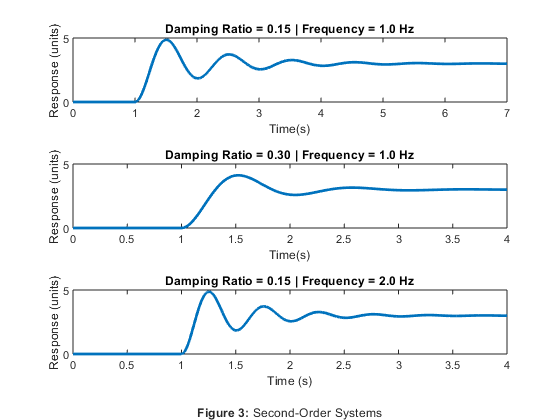
Exercise 3 Questions
Doubling the damping coefficient causes the step response to approach steady-state twice as quickly.
Doubling the oscillation frequency causes the step response to both oscillate at twice the frequency and, as a side-effect, also approach steady-state twice as quickly.
Exercise 4
Systems with two first-order systems in series.
figure; % Sys1Gain: 2, Sys1TC: 1s | Sys2Gain: 2, Sys2TC: 1s sim('Lab1_4A'); subplot(2, 1, 1); % 2 rows, one column, first graph plot(tout, simout, 'LineWidth', 2); title('KSS1: 2, TC1: 1s | KSS2: 2, TC2: 1s'); xlabel('Time(s)'); ylabel('Response (units)'); xlim([0, 10]); % Sys1Gain: 0.1, Sys1TC: 0.1s | Sys2Gain: 10, Sys2TC: 5s sim('Lab1_4B'); subplot(2, 1, 2); % 2 rows, one column, second graph plot(tout, simout, 'LineWidth', 2); title('KSS1: 0.1, TC1: 0.1s | KSS2: 10, TC2: 5s'); xlabel('Time(s)'); ylabel('Response (units)'); xlim([0, 30]);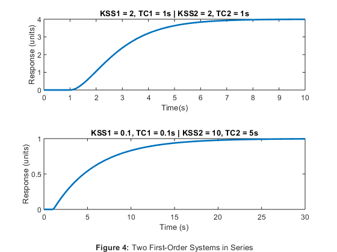
Exercise 4 Questions
The second-order system constituted by two first-order systems in series does not oscillate. Rather, it acts like a step response.
The two first-order systems in series results in a step-response. This step-response has a gain equal to the product of the gains of each subsystem and a time constant equal to the sum of the time constants of each subsystem.
Exercise 5
PID controller by itself with no plant or feedback. All gains 1. Unit step which occurs at time 1 second.
figure; sim('Lab1_5'); % PID Controller subplot(4, 1, 1); plot(tout, simout(:, 1), 'LineWidth', 2); title('PID Controller'); ylim([0 10]); % Proportional Control subplot(4, 1, 2); plot(tout, simout(:, 2), 'LineWidth', 2); title('Proportional Control'); % TODO % Integral Control subplot(4, 1, 3); plot(tout, simout(:, 3), 'LineWidth', 2); title('Integral Control'); % TODO % Derivative Control subplot(4, 1, 4); plot(tout, simout(:, 4), 'LineWidth', 2); title('Derivative Control'); % TODO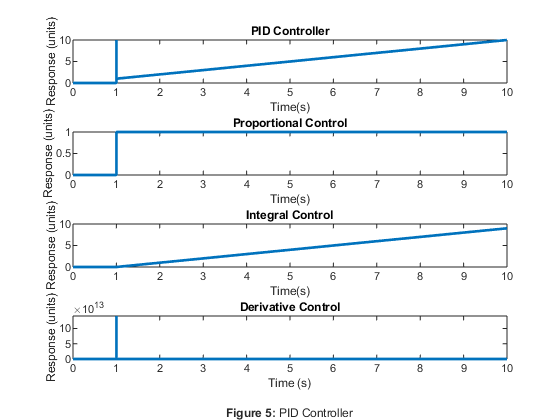
Exercise 5 Questions
Exercise 6
The tank is a first-order system. Its input is flow in gal/min; its output is fluid level in inches. KSS has units of in/(gal/min). The tank has a steady-state gain of 1 in/(gal/min), meaning that if one increases the flow into the tank by 1 gal/min, the tank level will rise 1 inch and settle at this new level. The tanks take 60 seconds to settle at a new level during a step response, so using the 4T rule of thumb, T = 15 seconds. The inlet valve is a gain since the valve reacts very quickly compared with the tank. Let Kv = 1 gpm/10% valve opening, so Kv = 0.10 gpm/%.
Exercise 6A
Proportional-only controller. The input of the whole system is the desired tank level, initially 0 inches in the Simulink model. This value actually represents a deviation from a steady-state equilibrium height. The input is in inches and the valve works in % open, so KP of the controller has units of %/inch, and the feedback in the control loop delivers measured fluid height in inches directly to the summing junction. The controller gain is 1%/inch – not necessarily the best number, but a beginning. A unit step commands the fluid level to go from its “zero” reference value to a new value one inch above the reference value.
figure; sim('Lab1_6A'); plot(tout, simout, 'LineWidth', 2); title('Proportional-Only Control of Tank'); xlabel('Time (s)'); ylabel('Height (in)'); xlim([0, 75]);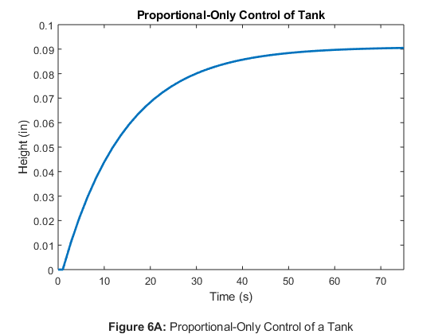
Exercise 6A Questions
Exercise 6B
The reference input is changed to a 1” increase in tank level at t = 1 second, then a 1” decrease from the reference value (2” below the 1” increase) at t = 75 seconds.
figure; sim('Lab1_6B'); plot(tout, simout, 'LineWidth', 2); title('Proportional-Only Control of a Tank: 2 Steps'); xlabel('Time (s)'); ylabel('Height (in)'); xlim([0, 180]);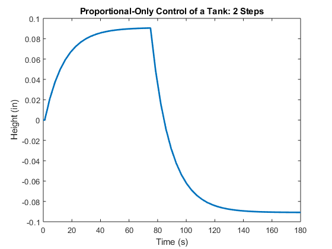
Exercise 6B Questions
Exercise 6C
The controller is to be designed to perform well with a particular plant. By trial and error, a gain that reduces the steady-state error to less than 10% is found.
figure; sim('Lab1_6C'); plot(tout, simout, 'LineWidth', 2); title('Proportional-Only Control of a Tank: <10% Error'); xlabel('Time (s)'); ylabel('Height (in)'); xlim([0, 120]);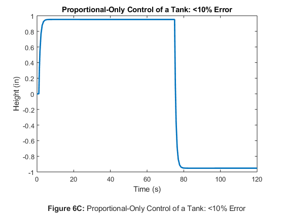
Exercise 6C Questions
Exercise 6D
The gain is modified further to reduce the time constant to less than one second.
figure; % Step 1 sim('Lab1_6D'); subplot(2, 1, 1); plot(tout, simout, 'LineWidth', 2); title('Proportional-Only Control of a Tank: <1s Time Constant Step 1'); xlabel('Time (s)'); ylabel('Height (in)'); xlim([0, 6]); % Step 2 subplot(2, 1, 2); plot(tout, simout, 'LineWidth', 2); title('Proportional-Only Control of a Tank: <1s Time Constant Step 2'); xlabel('Time (s)'); ylabel('Height (in)'); xlim([74, 80]);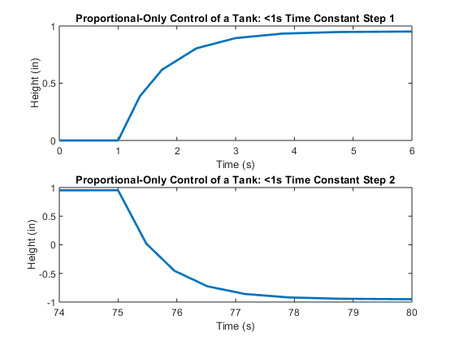
Exercise 6D Questions
Exercise 6E
A common problem for control systems is saturation. A real-world actuator is limited in power; for example, a fluid valve can only open to 100% and close to 0%. The valve operates at a steady-state at 75% open, so the valve signal from the controller can only increase by 25% and decrease by 75%. Right now, though, the model allows any valve opening, even physically impossible ones. A scope displayed the percent-open signal and the controller gain was increased until the modeled valve does something physically impossible by going outside the range from -75% to +25%. Then the model was fixed by using a saturation block in Simulink. With the controller commanding impossible valve openings, the model makes sure that the saturation block does not allow the physical valve to open greater than 100% or close below 0% (the signal must remain between -75% and 25%).
figure; sim('Lab1_6E'); plot(tout, simout, 'LineWidth', 2); title('Proportional-Only Control of a Tank: Saturation'); xlabel('Time (s)'); ylabel('Height (in)'); xlim([0, 120]);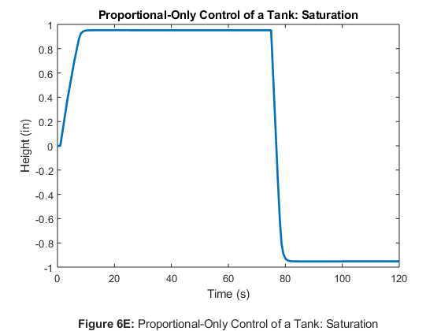
Exercise 6E Questions
Exercise 6F
The controller design is modified to eliminate the saturation by reducing the controller gain.
figure; sim('Lab1_6F'); plot(tout, simout, 'LineWidth', 2); title('Proportional-Only Control of a Tank: Eliminating Saturation'); xlabel('Time (s)'); ylabel('Height (in)'); xlim([0, 120]);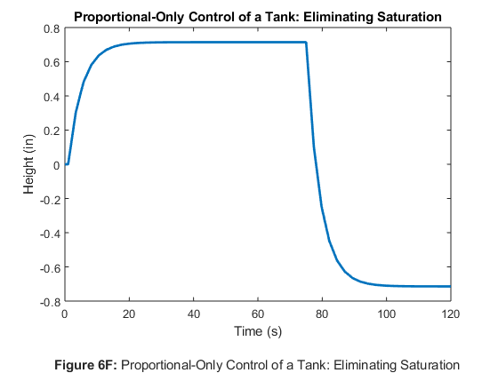
Exercise 6F Questions
Exercise 7
Work with real tank levels, not just deviations from a reference tank level. The reference tank level is 18”. The system is set up to allow a user to put in the absolute tank level desired and have the output read out in absolute tank level.
Exercise 7 Questions
Exercise 8
Second-order system with varying steady-state gains, damping ratio of 0.15, and natural frequency of 171.9 rad/s, controlled with a P-only controller in a unity-feedback control loop. KP = 1. The system is subjected to a step input.
% KSS = 2.3 % KSS = 4.6